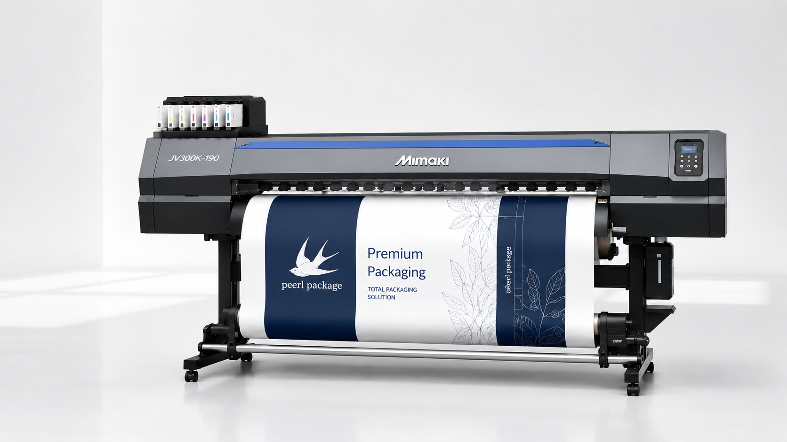
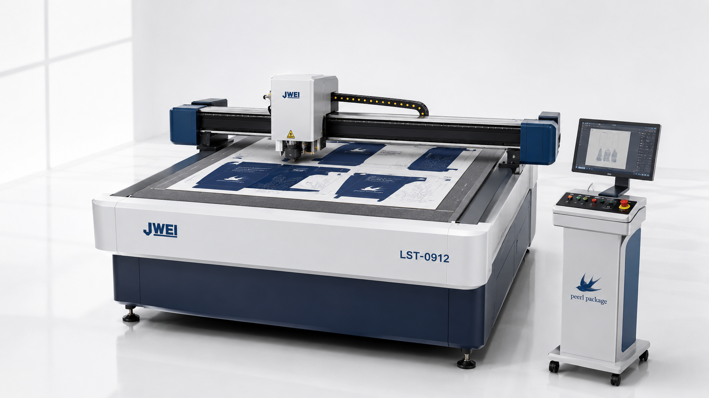
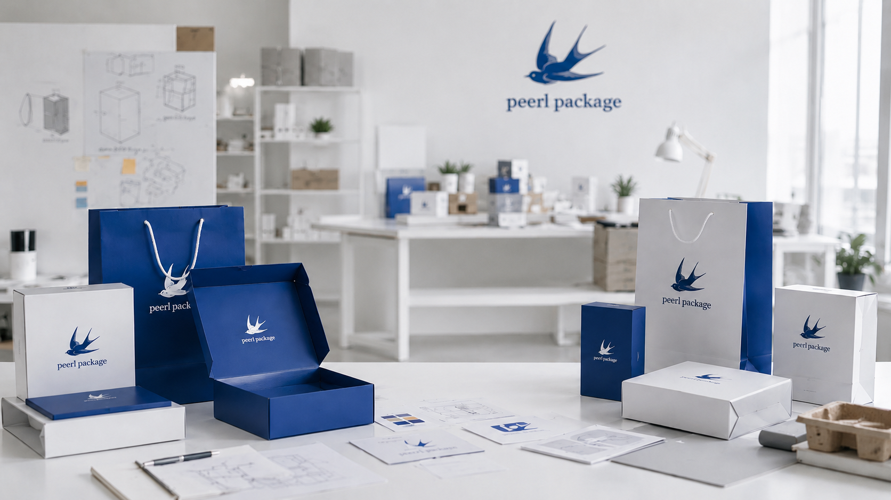

사이즈 검증
제품이 들어가는지, 손으로 넣고 빼기 불편하지 않은지 실제 크기로 확인합니다.
샘플 제작 검토
많은 고객들이 디자인만 완성되면 바로 생산이 가능하다고 생각하지만, 실제 제작에서는 제품이 들어가지 않거나, 구조가 불편하거나, 색상이 예상과 다르거나, 강도가 부족한 문제가 발생할 수 있습니다. 그래서 생산 전 실제 샘플을 제작하고 검토하는 과정이 중요합니다.
제품이 들어가는지, 손으로 넣고 빼기 불편하지 않은지 실제 크기로 확인합니다.
칼선, 접는선, 잠금 구조가 사용 방식에 맞는지 조립해 보며 점검합니다.
모니터에서 본 색과 출력물의 차이를 줄이기 위해 실제 샘플 색감을 봅니다.
생산 전에 수정할 부분을 먼저 찾아 제작 조건을 더 명확하게 정리합니다.

01. 고품질 출력 설비
JV300K-190은 패키지 디자인을 실제 출력물로 확인하고 목업 제작에 활용하는 대형 출력 설비입니다. 생산 전에 색상, 문구 위치, 전체 레이아웃을 눈으로 확인하는 단계에 사용됩니다.
주요 특징

02. 디지털 샘플 제작 설비
JWEI LST-0912는 패키지 샘플 제작을 위한 디지털 커팅 장비입니다. 칼선과 오시(접는선)를 구현하여 생산 전 실제 패키지 구조를 확인할 수 있습니다.
주요 특징
샘플 제작과 구조 검토가 실제 제품에서는 어떻게 적용되는지 다양한 제작 사례를 통해 확인할 수 있습니다. 단상자 샘플, 쇼핑백 샘플, 패키지 목업 제작이 필요한 경우 참고 방향을 잡는 데 도움이 됩니다.
패키지 제작사례 보기제품군에 따라 필요한 검토 기준이 다릅니다. 페르패키지는 업종별 용도에 맞춰 패키지 샘플 제작과 구조 확인 방향을 함께 정리합니다.
제작 검증 흐름
상담부터 납품까지 한 흐름 안에서 구조, 출력, 커팅, 조립 상태를 순서대로 검토합니다. 모바일에서는 단계별 타임라인처럼 차례대로 확인할 수 있습니다.
패키지 개발 스튜디오
출력물과 커팅 샘플을 조립해보면 도면에서 보이지 않던 간섭, 접힘, 노출면, 인쇄 위치를 더 쉽게 확인할 수 있습니다. 페르패키지는 고객이 제작 방향을 이해하기 쉽도록 샘플 검토 과정을 함께 정리합니다.

추천 대상
제품 출시 전 패키지 구조와 표현 방식을 실제 샘플로 확인하고 싶은 고객에게 적합합니다.
패키지 종류와 사이즈부터 정리해야 하는 경우
출시 전 제품과 패키지의 어울림을 보고 싶은 경우
미팅이나 행사에서 보여줄 실물형 샘플이 필요한 경우
제품 보호, 적재, 표시 공간을 함께 확인해야 하는 경우
생산 전에 수정 포인트와 제작 조건을 정리하고 싶은 경우
패키지 제작이 처음이라도 처음부터 모든 정보를 정리해 올 필요는 없습니다. 제품 기준으로 필요한 확인 항목을 함께 좁혀갑니다.
생산 전 샘플로 실제 수납 상태를 확인할 수 있습니다.
제품 기준으로 필요한 여유 공간과 구조를 함께 검토합니다.
출력 샘플을 통해 색상과 레이아웃을 먼저 확인할 수 있습니다.
상담을 통해 필요한 자료와 준비 순서를 안내해드립니다.
패키지 샘플 제작, 패키지 목업 제작, 패키지 구조 검토를 문의하기 전 자주 확인하는 내용을 정리했습니다.
패키지 종류와 사양에 따라 샘플 제작만 검토할 수 있습니다. 구조, 색상, 사이즈 확인 목적이라면 상담 시 필요한 범위를 먼저 안내드립니다.
제품 실물이 없어도 예상 사이즈, 참고 사진, 원하는 패키지 형태가 있으면 상담을 시작할 수 있습니다. 실물이 준비되면 더 정확한 구조 검토가 가능합니다.
로고, 참고 이미지, 원하는 분위기만 있어도 문의할 수 있습니다. 디자인 작업 범위와 샘플 제작 가능 범위는 상담 후 안내드립니다.
패키지 종류, 소재, 인쇄 방식, 수량에 따라 가능 범위가 달라집니다. 필요한 수량과 용도를 알려주시면 적합한 제작 방향을 함께 검토합니다.
샘플 검토 후 사이즈, 구조, 색상, 조립성을 확인하고 수정 방향이나 생산 진행 여부를 결정할 수 있도록 안내드립니다.